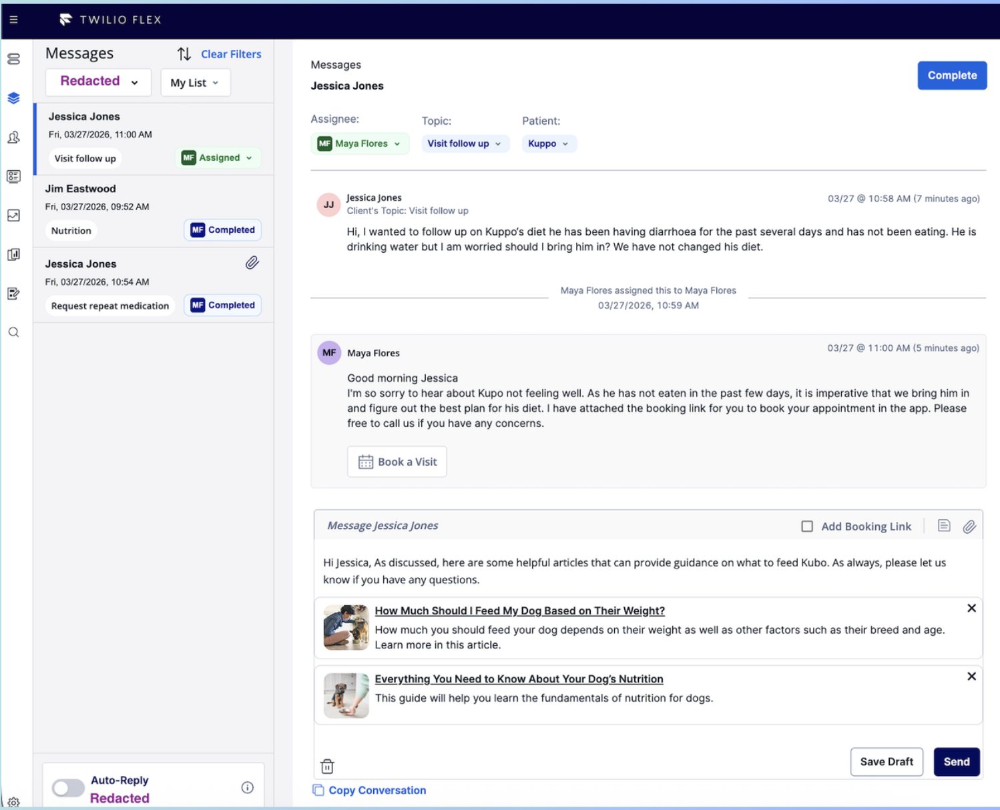

Clinic
communication tool.
Twilio messaging infrastructure connecting clinics and pet owners at scale through spanning secure staff login, async messaging, templated outreach, and outbound workflows.
01
The clinic experience.
Support both U.S. and U.K. pet owners while staying compliant with regional veterinary regulations. Accommodate varying clinic roles; enable flexible, async communication with secure and fast login for staff.
32
Clinics
1,500+
Staff
0
Breach Incidents
Clinic Async Messaging

Steps Taken
- 01 Collaborated with engineering and clinic staff to assess scope and architectural constraints.
- 02 Mapped user flows to define access levels and permissions per role.
- 03 Coordinated implementation to ensure secure and efficient login workflows.
Outputs
- 01 Assigned/Completed message queue with filters by topic, assignee, and status.
- 02 Threaded view linking client, patient, topic, and assignee to a single conversation.
- 03 Secure, quick login for associates — SSO with role-based scope.
02
Templates & outbound messaging.
Templates and outbound search enabled staff to securely manage high volumes of follow-ups without repetitive manual responses.
Template Creation & Storage

Outbound Messaging

Steps Taken
- 01 Designed a two-tab template library (My Templates / Team Templates) scoped by clinic topic.
- 02 Built outbound search — patient, client, email, date range — so staff can initiate conversations safely.
- 03 Wired conversation history into the composer so staff see the last interaction before sending.
Outputs
- 01 Reusable templates with {{Client Name}} / {{Patient Name}} merge variables and one-click insertion.
- 02 Outbound messaging surface with full client conversation history and 'Message Client' kick-off.
- 03 Auto-Reply toggle per clinic with audit trail of which template was sent when.